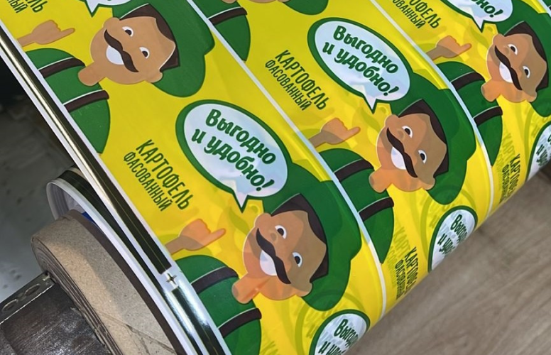
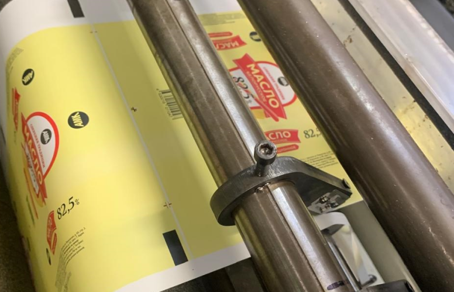

Материалы для гибкой упаковки
Печать гибкой упаковки под заказ
Без гибкой упаковки в текущий момент не обходится практически ни одна отрасль промышленности, торговли, обслуживания, логистической сферы. Расфасовка товаров в тщательно подобранный упаковочный материал с узнаваемым логотипом компании является одним из основных факторов привлечения покупательского спроса и увеличения товарооборота. Материалы гибкой упаковки подвержены постоянному неизбежному обновлению в целях поддержания качества товара, удобства при транспортировке и продолжительного хранения. Внешний вид искусно упакованного изделия притягивает взгляд потребителя, позволяет оценить продукцию и совершить импульсную покупку.
Материал гибкой упаковки подбирается в индивидуальном порядке в зависимости от содержимого, основные критерии при выборе – защита от механических повреждений, внешних негативных воздействий – ультрафиолета, повышенной влажности, и прочих неблагоприятных факторов, способных привести к изменению качества товара. Наиболее эффективное решение – применение в качестве материала для гибкой упаковки многослойной полимерной пленки, удовлетворяющей практически всем требованиям потребителей. Многослойные пленки производятся двумя основными способами, с использованием гранулированного сырья (соэкструзионная пленка), либо ламинированием и дальнейшей последовательной склейкой слоев с помощью специального клея.
Наша компания давно и успешно занимается изготовлением и эксклюзивной цифровой печатью, мы применяем следующие материалы гибкой упаковки: полиамидная пленка PA, BOPA, полиэтилентерефталатовая (лавсан, ПЭТ), EVOH, воздушно-пузырчатая, полиэтилен-полиамидная (PA/PE), PE/CPР, PET/PE, PET/PP, многослойная ПВД, полипропиленовая (CPP-CAST). Производим с подготовкой предварительного проекта профессиональную печать на БОПП пленке, линкавере, металлизированной, жестко-ламинированной, эколине, стрейче, на спанбонде, многослойной пленке, оригинальной кашированной и алюминиевой фольге, ламинированной бумаге. Подготовим подходящий проект уникального дизайна, предложим разнообразные варианты материала гибкой упаковки в соответствии с обозначенным заказчиком техническим заданием.